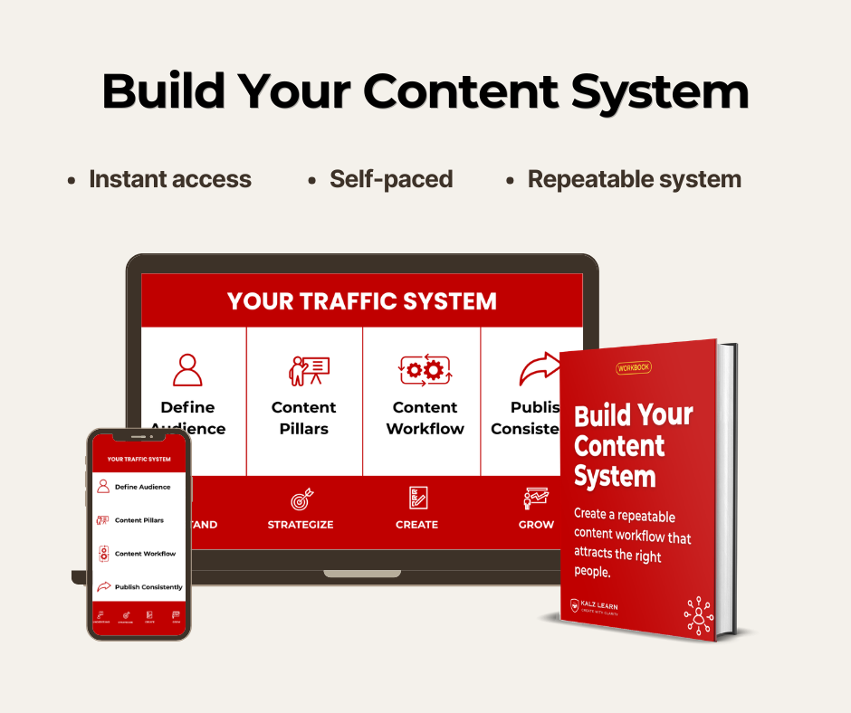

The Maps & Satellite Data Annotation Guide
Master Building Tracing, Land Cover Mapping, and GIS Vector Labeling
Learn how to interpret top-down aerial views and convert satellite imagery into clean geospatial datasets. This guide covers GIS fundamentals, raster vs. vector layers, polygon building footprints, land cover classification, and practical workflows using QGIS and Label Studio.

Why Geospatial Data Demands Overhead Interpretation
Annotating aerial data requires learning to look at the world from above. Distinguishing cropland from rangeland or recognizing building footprints despite roof shadows and low image resolution requires specialized knowledge.
This guide teaches you how to handle raster satellite imagery, digitize vector polygons, assign feature attributes in GIS software like QGIS, and deliver high-precision geospatial training data.
What This Guide Helps You Understand
Build a solid foundation in geospatial and satellite data labeling:
- Understand GIS basics, raster vs. vector formats, and remote sensing imagery
- Recognize land features from above: built-up areas, cropland, forests, and water
- Digitize precise building footprints and farm plot boundaries without overlap
- Create point annotations for water access and infrastructure mapping
- Work practically in GIS tools (QGIS) and Label Studio software
- Avoid resolution pitfalls, building shadow distortions, and boundary gaps
Is This Guide For You?
It's a YES if...
You want to learn GIS data annotation, work on satellite or drone mapping projects, digitize land cover boundaries, or learn QGIS labeling workflows.
It's NOT for you if...
You are looking for advanced surveyor cartography math or complex satellite orbit physics.
Chapter Breakdown
- Chapter 1: Understanding Geospatial Annotation — What GIS means, raster vs. vector, satellite/drone imagery, and resolution.
- Chapter 2: Learning to Read Aerial Imagery — Top-down views, recognizing built-up areas, cropland, forest, water, and boundaries.
- Chapter 3: Geospatial Annotation Methods — Land cover mapping, building footprints, farm plot polygons, and water points.
- Chapter 4: Practical Geospatial Workflow — Label Studio and QGIS workflows, creating layers, defining attributes, and exporting.
- Chapter 5: Geospatial Quality — Boundary accuracy, building shadows, handling unclear features, and preventing polygon gaps.
- Chapter 6: Geospatial Practice Lab — Land-cover exercises, building footprints, farm boundaries, water points, and final GIS review.
Included Resources
- The Maps & Satellite Data Annotation PDF Guide
- Raster vs. Vector Reference Guide
- QGIS & Label Studio Workflow Guide
- Land-Cover Mapping Practice Sheets
- GIS Annotation Quick Reference Sheet
What You'll Have at the End
- The ability to interpret satellite and drone imagery accurately
- Hands-on skills in tracing clean building footprints and land cover polygons
- Familiarity with GIS feature attributes and shapefile layer workflows
- A specialized skill set in geospatial data labeling for environmental and mapping AI
Continue Your AI Data Learning Path
Combine geospatial skills with computer vision or data quality verification.